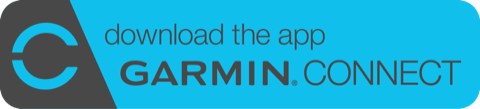

由第一次跑步，到比賽日。
告訴 RaceWise 你為甚麼而練、現在練多少。它會安排每星期的訓練，你的一星期有變，計劃也會跟著改。

跟著你變的一星期
半馬計劃的其中一星期。試試真實生活會帶來甚麼變化。
- 一休息
- 二間歇6 × 800 米間歇已搬走
這天太忙，課搬到星期四。
- 三輕鬆跑6 公里輕鬆跑
6 公里4 公里今朝 HRV 偏低，今日練短一點。
- 四休息間歇6 × 800 米
搬到這天，因為辛苦課不會連續兩天。
- 五肌力25 分鐘
- 六長課16 公里
逐步課表已放到 Apple Watch。
- 日休息游泳1.5 公里輕鬆
多項運動同一個計劃。Pro
免費版就是完整計劃，不是試用。 一種運動、所有安全檢查和 Apple Watch 課表，沒有時間限制。 比較免費版與 Pro
由你現在的水平開始
跑步新手
選「我的第一個 5K」。由每次跑一分鐘開始，每星期慢慢加長，每個里程碑都會記下。不肯定幾時？RaceWise 會建議日子。
已經有練
從數百個經查證的活動中選擇，或自己定日子，可以即日開始或延後最多四星期。報了名的比賽都可以加進去：之前的比賽會變成熱身賽。可按配速、心率、功率或體感訓練。
- 跑步
- 游泳
- 單車
- 划艇
- 行山
比賽日，早有安排
目標配速、早餐和補水安排免費。Pro 另有每公里分段時間和分三段的配速策略。
- 第 1–7 公里5:40
- 第 8 公里啫喱
- 第 8–16 公里5:35
- 第 15 公里啫喱
- 第 17–21.1 公里5:30
賽道有斜？ 輸入賽道爬升，提升期會加入斜路重複跑和有斜的長課。附近沒有斜路？會告訴你可以怎樣代替。
準備大行程？ 每 100 米爬升當作多走一公里。背包每隔幾星期加重一點，最後幾週加入落坡練習。
肌力與伸展，3D 示範
每項運動都有簡短套路，超過 30 個動作，毋須器材。點一下動作，3D 公仔就會示範，可以拖動轉身看。單邊動作左右各做一次。Pro 另有計時器幫你數組數和休息，鎖定畫面也看得到。
出門之前
開啟天氣後，RaceWise 會查看你訓練地點有多熱，告訴你應該慢多少；比賽前十天會顯示比賽日天氣預報。天氣資料來自 Apple 天氣。
每一課都有路線。Pro 從你所在位置出發、長度合適的路線，可以用 Google 地圖或 Apple 地圖跟著走。
教練不能改動你的數字
教練的說明由 Apple Intelligence 在你的 iPhone 上撰寫，你輸入的內容只留在手機。配速、距離和日期都來自計劃；說明裡如果出現計劃沒有的數字，就會改為顯示簡單摘要。
今日是 7.5 公里輕鬆跑，配速 5:46–6:21 /km。用可以傾偈的速度跑，為 1 月 17 日的比賽打好基礎。
慢慢加，穩穩加
每份計劃都要通過安全檢查。每週訓練量最多加 10%，初學者、年長人士和傷後復出會更慢。某類課之後經常出現疼痛，會提供較溫和的版本。胸痛、心悸、刺痛或骨痛：請停下並求診。
基礎期提升期減量期
App 裡還有
- 語音指導手機放在口袋，RaceWise 逐步讀出每個環節，並報告你的配速。
- 每次跑完用一兩句話說明今次和計劃比較如何。
- 進度每項運動都有圖表，跑步體能分數按你的真實成績計算。
- 衝線之後恢復建議，然後計劃下一場、保持體能或好好休息。
- 問 Siri用聲音問今日的課、填寫身體狀況或記錄訓練。
- 分享圖卡和貼紙，包括號碼布和獎牌。
- 鎖定畫面Pro語音指導、動作計時器和比賽當朝倒數；另有小工具和控制中心按鈕。
- 影海報加比賽Pro拍下比賽海報，RaceWise 會幫你填好資料。
課表直接放到 GarminPro
連結 Garmin Connect™ app 後，下星期的跑步、單車、游泳和肌力課表會傳到你的 Garmin 行事曆，附配速和心率目標。完成的 Garmin 活動會傳回來，計劃隨之調整。

免費與 Pro
Pro 讓訓練更方便。凡是關乎安全的功能，一律免費。
免費
- 一種運動的完整計劃：比賽、目標或運動習慣
- 每日身體狀況、疼痛和恢復調整
- 炎熱天氣建議和比賽日天氣預報
- Apple Watch 逐步課表
- 教練說明和語音指導
- 肌力與伸展，附 3D 示範
- 趨勢圖和跑步體能分數
- 比賽日目標配速和補給
RaceWise Pro
- 多項運動同一個計劃
- Garmin Connect 雙向同步
- 完整比賽日計劃和分段時間
- 每一課的路線
- 鎖定畫面、小工具和控制中心
- 動作計時器
- 問你的計劃、影相加比賽
Pro 是訂閱服務，可按月或按年付款，首 14 日免費。價錢以 App Store 顯示為準。可隨時在 Apple 帳戶設定中取消。
你的訓練資料，只屬於你。
不用註冊、沒有廣告、沒有分析工具。計劃只存在你的 iPhone 和你自己的 iCloud，不會出售或分享。只有在你連結 Garmin 或傳送意見時，才會用到一個小型伺服器。所有資料都可在 App 內刪除。私隱政策
有問題或建議？
電郵至 racewiseapp@gmail.com，或在 App 內選設定 › 傳送意見。
RaceWise 提供一般訓練建議，並非醫療意見。如有疼痛，請停止並諮詢醫生或物理治療師。